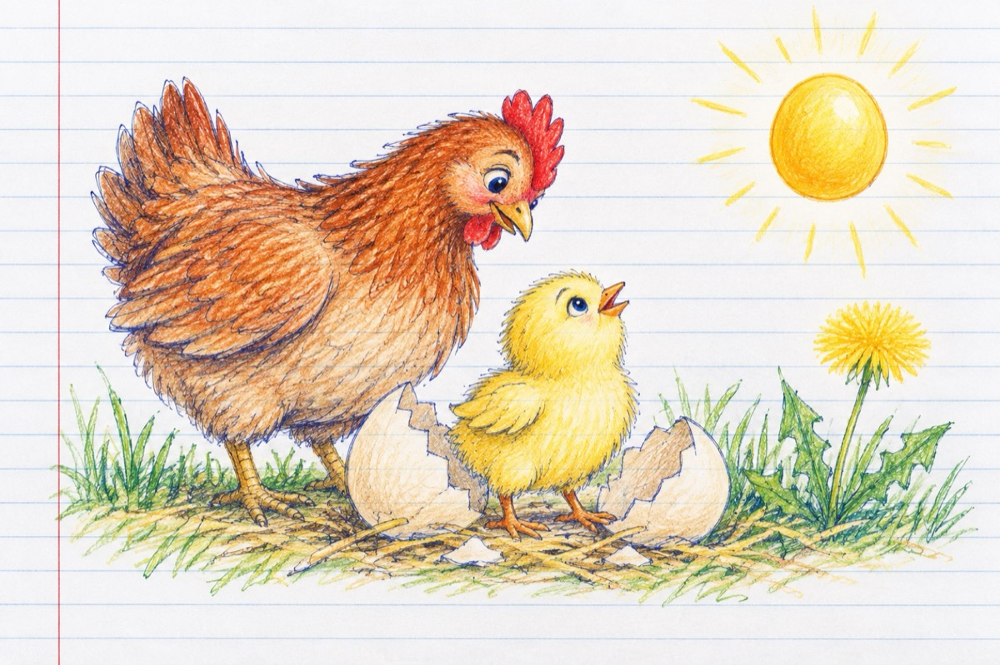

Puișorul se întreabă
Deschizând coaja la ou
Puișorul se întreabă
Tot ce văd apare nou
Ce-mi pot ochii mei să vada?
Oare unde eu am fost
Am trăit așa. orbește?
Lumea asta are-un rost
Totu-n juru-mi strălucește
Sus de tot e-un boț de aur
Parcă-ar fi un gălbenuș
Lumea nouă-i un tezaur
Mi se pare că-s în plus.
Sunt scăldat tot în lumină
Totu-n jurul meu vibrează
Mă cheamă o găină
Să fac pași mă-ncurajează.
Semăn cu o păpădie
Ce țâșnește-n astă lume
În hăinuța-mi argintie
Mai mulți pui vin spre mine.
Îmi las ochii să privească
Spre găoacea unde-am fost
Înspre casa părintească
Și-nțeleg al vieții rost!
Vasile Groza
Apare și în: Copile sau Cartea copiilor.